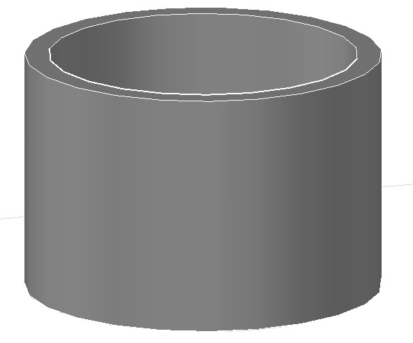

в Бресте:8 (0162) 53 – 16 – 68, 8 (029) 507 – 41 – 20 МТС
в Чернавчицах:8 (0162) 94-54-32, 8 (033) 644 - 54 – 32 МТС
|
Узнать актуальные цены и заказать продукцию можно по телефонам: в Бресте:8 (0162) 53 – 16 – 68, 8 (029) 507 – 41 – 20 МТС в Чернавчицах:8 (0162) 94-54-32, 8 (033) 644 - 54 – 32 МТС |
Завод предлагает армированные бетонные кольца для канализационных колодцев. Армированные кольца имеют преимущество перед неармированными при строительстве канализации, т.к. являются значительно более крепкими и долговечными. Они не дают трещин при проделывании в бетоне отверстий для трубы, а также при нагрузках, связанных с движением транспорта рядом с колодцем, или непосредственно по его поверхности. В неармированных изделиях при подобных условиях неизбежно возникают микротрещины.
Кольца колодцев для канализации, крышки и днища можно купить в нашем склад-магазине, расположенном на улице Автолюбителей (микрорайон Задворцы)
в г. Бресте, либо на складе завода в аг. Чернавчицы. Производство - заводское. Наличный и безналичный расчёт, принимаем к оплате пластиковые карты.
Общие правила по монтажу канализационных колодцев читайте здесь.
|  | Название | Размеры (d × h) | Цена, BYN | Примечания |
|---|---|---|---|---|
| KC 7.3-A | 70cm × 30cm | 23,57 | ||
| KC 7.6-Ac | 70cm × 60cm | 41,50 | со скобами | |
| KC 10.9-A | 1m × 90cm | 47,17 | ||
| KC 15.9-A | 1,5m × 90cm | 73,10 | ||
| KC 20.9-A | 2m × 90cm | 118,94 | ||
| KC 10.9-Aс | 1m × 90cm | 57,77 | со скобами | |
| KC 15.9-Aс | 1,5m × 90cm | 85,68 | со скобами | |
| KC 20.9-Aс | 2m × 90cm | 133,81 | со скобами | |
| KC 10.6-Aс | 1m × 60cm | 42,11 | со скобами | |
| KC 15.6-Aс | 1,5m × 60cm | 66,49 | со скобами | |
| KC 20.6-Aс | 2m × 60cm | 105,02 | со скобами | |
| KC 10.3-Aс | 1m × 30cm | 32,41 | со скобами | |
| KC 15.3-Aс | 1,5m × 30cm | 39,78 | со скобами | |
| d - внутренний диаметр h - высота |
||||
Канализационные кольца всегда армируются, поэтому и являются по сути железобетонными. Для колодцев питьевой
воды каркас из арматуры не используется, для этих целей применяют бетонные кольца без армирования.
Спектр применения железобетонных колец довольно широк. Помимо канализации, они используются для монтажа
газопроводных и водопроводных систем, скважин, септиков, туннелей, предназначенных для прокладки силовых, сигнальных
и телефонных кабелей.
Железобетонные кольца выдерживают намного более высокие нагрузки, чем просто бетонные. Их можно транспортировать, поставив в два ряда одно на одно, тогда как бетонные при такой транспортировке с высокой вероятностью будут повреждены. Однако ж/б кольца не используются для устройства колодцев питьевой воды, поскольку арматура разрушаясь насыщает питьевую воду оксидами железа (ржавчиной).
Кольца для колодца в народе называют «бочки». Промышленная маркировка - КС, цифры в маркировке обозначают внутренний диаметр и высоту в дециметрах. Например: изделие КС 7.3 имеет внутренний диаметр 70 сантиметров и высоту 30 сантиметров. Маленькая буква «с» означает наличие скоб. Скобы - металлические ступени внутри «бочки». Изделия со ступенями, как правило, приобретают строительные организации, строящие глубокие коммуникации. В частном строительстве глубокие колодцы обычно не устраиваются и ступени из металлических скоб не применяются.
Отгрузка изделий нашего предприятия производится на складах в г.Бресте и в аг.Чернавчицы, что дает клиенту возможность выбора наиболее дешевой и удобной доставки. Чаще всего нашу продукцию приобретают клиенты из Брестской области в Жабинке, Березе, Каменце, Столине, Дрогичине, Ляховичах, Пружанах, Ивацевичах, Малорите, а также малых населенных пунктах в Брестском районе: Ивахновичах, Домачево, Страдечах, Клейниках, Мотыкалах, Лыщицах, Радваничах, Тельмах, Мухавце.